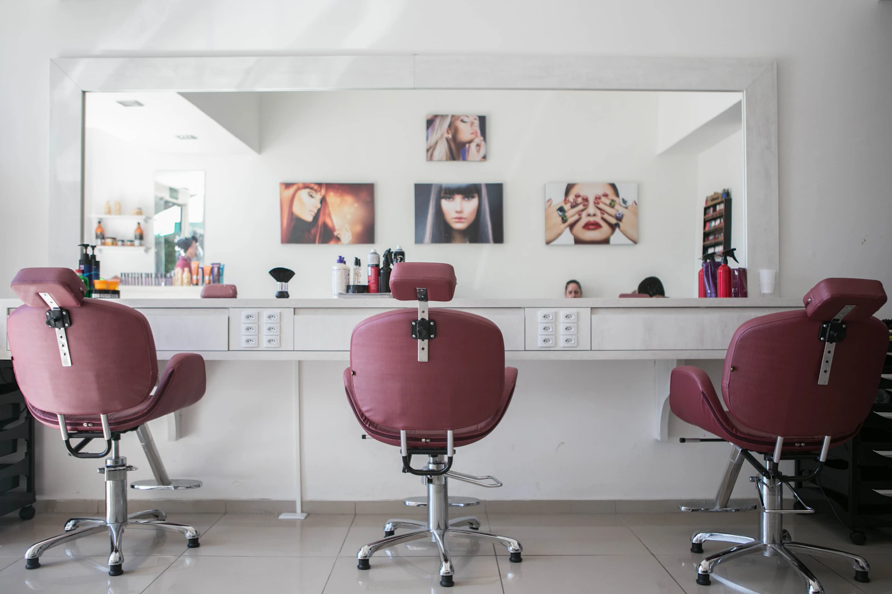
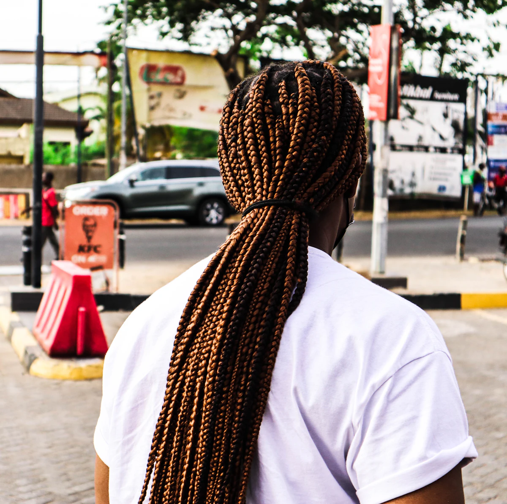
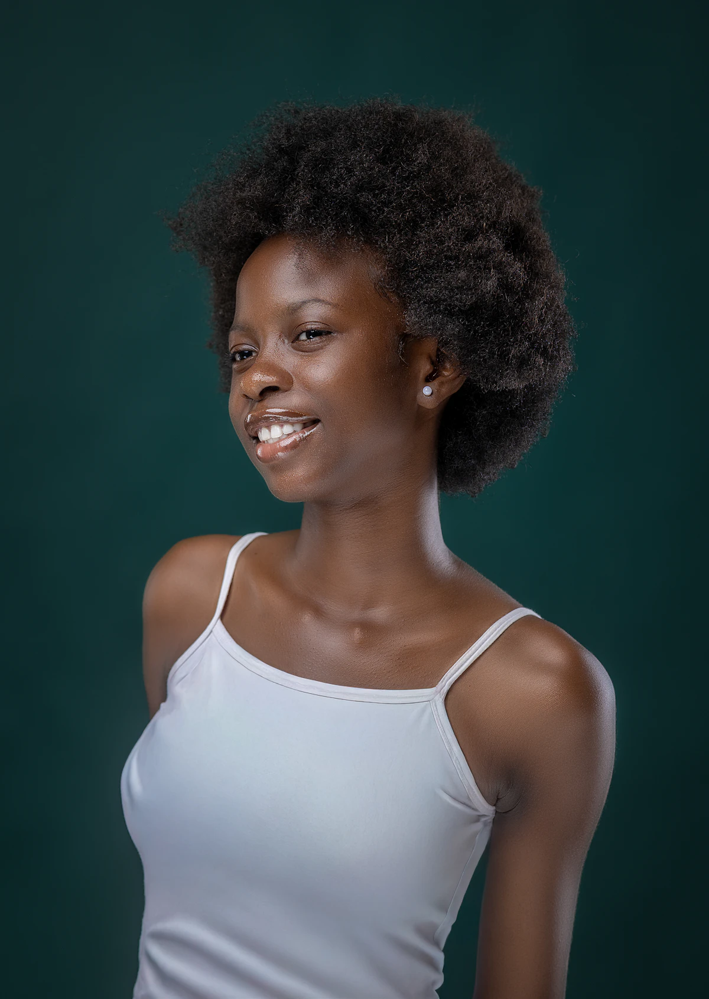
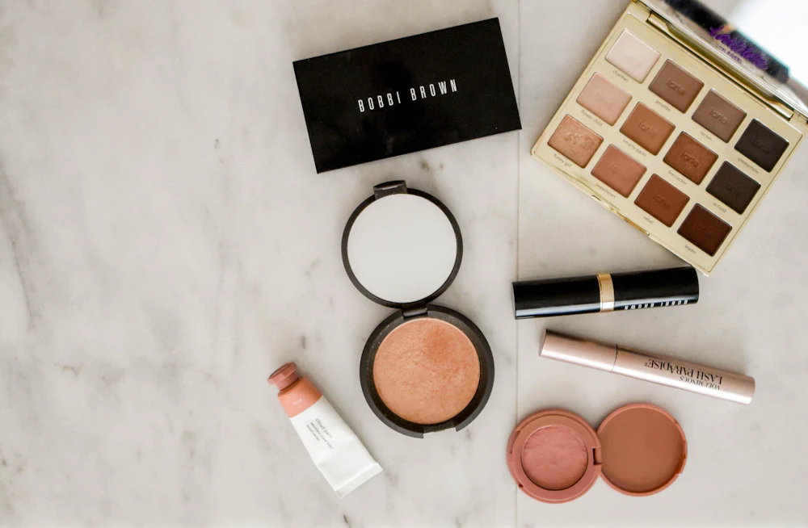

COIFFURE & BEAUTÉ · N’DJAMENA
Votre beauté.
Votre signature.
Des racines qui inspirent. Un style qui vous ressemble. Découvrez Ets. Ndob_MagicShop, votre parenthèse coiffure et beauté à Chagoua.
De l’attention.
Du style. Et surtout, vous.

L’ESPRIT ETS. NDOB_MAGICSHOP
La beauté commence
quand on se sent soi.
Des tresses affirmées aux textures naturelles, nous célébrons toutes les façons d’être vous. Notre point de départ : vos envies, votre personnalité, vos cheveux.
Entrer dans notre universÀ CHACUNE SON RITUEL
Le style. Le soin.
La touche en plus.

01 / COIFFURETresses & caractère↗
02 / CHEVEUX NATURELSTextures & soins↗
03 / MISE EN BEAUTÉÉclat & détails↗Photographies d’inspiration, non réalisées par le salon.
LE CARNET D’INSPIRATIONS
Un regard.
Une nouvelle envie.

UN MOMENT RIEN QUE POUR VOUS